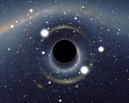
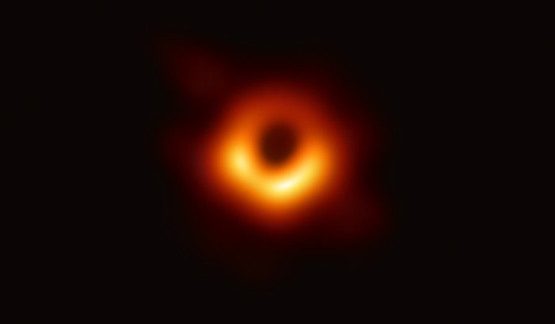
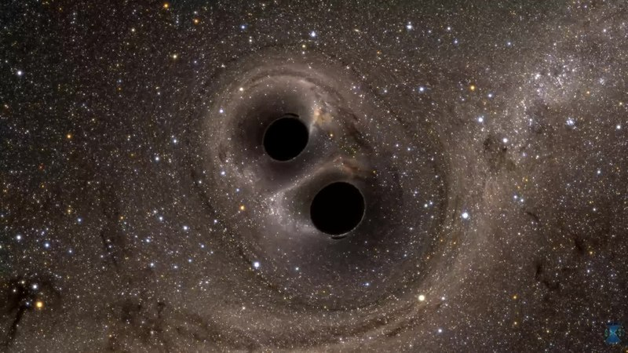

Rubrique scientifique
Invisibles et imprévisibles, les trous noirs sont les objets les plus mystérieux du cosmos. Ces objets sont capables d'avaler des étoiles, des corps célestes. Pas même la lumière ne peut s'en échapper.
Un trou noir est un corps extrêmement massif est dense. Il est issu de la mort d’une étoile massive ou supermassive. A la fin de sa vie, lorsqu’elle a épuisé tout son gaz, celle-ci déclenche une supernova et/ou s’effondre sur elle même pour créer un trou noir (ou une étoile à neutron pour les moins massives). La majorité des personnes le considère comme un aspirateur spatial mais cela ressemble plus à un entonnoir puisqu’il a une gravité immense. Il a la capacité de déformer l’espace-temps et même la lumière n’arrive pas à s’en échapper.
Le trou noir est composé de l’horizon des événements qui délimite le point de non retour, tout objet ou particule qui dépasse cet horizon est condamné à rester dans le trou noir. Le trou noir contient en son milieu la singularité. C’est un point du trou noir infinitésimal qui a une densité infinie ou presque pour les théories gravitationnelles. La distance entre la singularité et l’horizon des événements s’appelle le rayon de Schwarzschild ou Rs. De plus, le trou noir a comme caractéristique d’être invisible. Mais on le repère grâce à la sphère photonique ou disque d’accrétion qui l’entoure. C’est la “frontière visible” du trou noir. Elle est composée notamment de matière et de photons qui arrivent à échapper à l’attraction du trou noir pour nous parvenir. Par ailleurs, la sphère est immatérielle et donc les orbites sont très instables. La distance entre la singularité et la sphère photonique est de 1,5 fois le rayon de Schwarzschild. Par ailleurs Il existe plusieurs types de trous noirs.
Les trous noirs stellaires sont les trous noirs les plus petits et les plus fréquents (il y en a plusieurs milliards dans notre galaxie). Ces trous noirs stellaires peuvent avoir une masse jusqu’à quelques dizaines de fois celle du Soleil. En général, ils résultent de l’évolution naturelle des étoiles le plus massives (étoiles ayant une masse supérieure à 8 fois celle du Soleil). C’est donc leur dernière étape de leur évolution stellaire. Ces trous noirs ont d’abord été découverts par l’observation d’étoiles binaires. Ces étoiles qui fonctionnent par deux et tournent l’une autour de l’autre, peuvent aussi être couplé à un trou noir stellaire. Celui-ci, invisible, attire l’étoile et lui vole de la matière. Dans ce cas, nous pouvons observer avec un télescope que l’étoile change de couleur, ce qui signifie qu’elle est en orbite autour de quelque chose qu’on ne voit pas : un trou noir ! Dans certains cas, plus rares, les trous noirs stellaires peuvent aussi se former suite à la collision de deux étoiles à neutrons. Ces astres sont les cadavres d’étoiles moins massives (elles sont quand même plus massives que les étoiles qui deviennent des naines blanches). Très petits mais très denses, quand ces astres rentrent en collision, ils libèrent de grandes quantités d’énergie, ce qui aboutit à un trou noir stellaire. Les trous noirs stellaires sont donc nombreux dans l’univers et ils ne sont, pour la plupart, juste des cadavres d’étoiles.
Contrairement aux autres trous noirs, l’origine des trous noirs intermédiaires, abréviation pour trous noirs de masse intermédiaire, est très mystérieuse, n’étant issus ni d’une étoile ni d’une galaxie. D’une masse bien plus grande que le soleil et les trous noirs stellaires (100 à 100 000 masses solaires contre environ 10 pour un trou noir stellaire), mais bien plus faible que celle des supermassifs (plus de 1 000 000ma), les trous noirs intermédiaires sont aussi difficiles à débusquer car contrairement aux supermassifs qui, absorbant l’énorme quantité de gaz interstellaire au centre des galaxies, émettent de puissants rayonnements X visibles à des milliards d’années-lumière, les trous noirs intermédiaires absorbent trop peu de matière pour produire des signaux plus puissants que ceux des étoiles environnantes. Quant aux stellaires, impossible de les rater: on estime leur nombre à plus de 100 000 000 dans notre galaxie, contre seulement plusieurs centaines d’intermédiaires.
C’est pour cela que les scientifiques recherchent en permanence de nouveaux moyens de les débusquer, comme par exemple en étudiant la modification, même légère, des trajectoires des étoiles pour calculer si elles correspondent à l’influence gravitationnelle d’un trou noir. Il s’agit actuellement de la méthode la plus concluante pour la découverte des intermédiaires.
Jet émis depuis la galaxie M87, plus précisément émis par le trou noir supermassif
Messier 87 ou M87 Télescope Hubble, Nasa
Les trous noirs supermassifs ont une masse comprise entre quelques millions à plusieurs milliards de masses solaires. Dernière des catégories, ils sont les “monstres de l’espace”. En effet, les trous noirs supermassifs possèdent une force d’attraction quasi-infinie, des milliards de milliards de fois supérieure à celle des trous noirs stellaires et intermédiaires. De plus, ils sont assez puissants pour maintenir soudées les galaxies dont ils sont le centre comme le trou noir Sagittarius A* qui a une masse d'environ 4 millions de masses solaires. Contrairement aux autres types de trous noirs , les trous noirs supermassifs sont facilement repérables grâce à l’énorme quantité d’énergie qu’ils dégagent en absorbant des centaines d’étoiles comme le trou noir supermassif Messier 87 qui a une masse de 6,5 milliards de masses solaires et dégage des jets d'énergie.
Le disque d'accrétion du trou noir M87 imagé par l'Event Horizon Telescope,
European Souther Observatory

Vue polarisée du trou noir de M87 par l'Event Horizon
Telescope, European Souther Observatory
D’abord, il est impossible d’aller vérifier ce qu’il se passerait car rien ne peut en sortir, pas même un engin voyageant à la vitesse de la lumière. Mais en revanche, on peut théoriser cette chute. Selon les physiciens et astrophysiciens, une chute dans un trou noir serait simplement infinie, car sa puissance gravitationnelle est si énorme qu’il déforme le temps. D’après les théories actuelles, un astronaute, s’il tombait dans un trou noir stellaire ou intermédiaire, celui-ci serait “spaghettifié” avant d’avoir atteint l’horizon des événements. En clair, il mourrait, déchiré par la gravité car celle-ci serait beaucoup plus forte à sa tête (en imaginant qu’il plonge dans le trou noir) qu’à ses pieds. En revanche, si il tombait dans un trou noir supermassif, il atteindrait l’horizon des événements sans problèmes car la gravité serait tellement intense qu’il n’y aurait qu’une différence négligeable de celle-ci entre sa tête et ses pieds. De plus, pour un observateur extérieur, l’astronaute semble ralentir jusqu’à même s’arrêter. Comme dit tout à l’heure, la gravité serait tellement intense qu’elle déformerait le temps et l’observateur extérieur pourrait rester plusieurs milliards d’années à observer l’astronaute sans jamais voir de changement. Par contre, l’astronaute, lui, vivrait l’inverse. Il verrait le temps s’accélérer de plus en plus jusqu’à voir en quelques minutes l’évolution de l’univers jusqu’à sa destruction.
-> pour plus de détails, allez voir cette vidéo
La fusion de deux trous noirs s’opère lorsqu' ils entrent en collision, attirés par leurs champs gravitationnels respectifs. Il existe alors deux issues: la fusion des deux trous noirs en un seul, s’ils sont de masses équivalentes ou l'absorption du moins massif par le plus massif si les masses sont différentes. Le trou noir formé a donc la masse équivalente à l’addition des masses des deux trous noirs et sont horizon des événements est repoussé, proportionnellement à sa masse. En outre, cet événement violent crée des ondes gravitationnelles intenses qui traversent l’espace à la vitesse de la lumière. Cet événement est donc tellement puissant qu’il peut déformer l’espace-temps à jamais. En fait, juste avant de fusionner, les deux trous noirs se tournent autour et s’attirent. Cela provoque des ondes gravitationnelles. Nous arrivons actuellement à détecter ces ondes indirectement car elles arrivent à faire bouger (bien que très peu) la Terre.
Simulation vidéo de la vue qui serait vue par un observateur proche lors de la fusion de deux trous noirs
Cet article a été rédigé par Maxime Roulet, Alexandre Chateau, Alexandre Jano et Mickaël Dubreuil